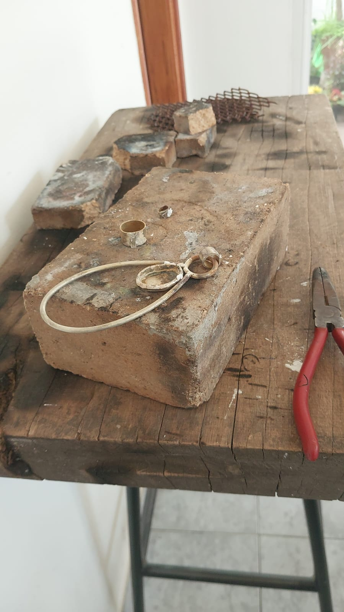

Joyería Artesanal en Alpaca - Tandil
Descubrí el fascinante mundo de la joyería artesanal en Tandil, donde artesanos locales trabajan con alpaca, bronce, cobre y aluminio creando piezas únicas.
- Talleres: La Bárbara, Meisis Joyería, Taller Floren Joyas
- Técnicas: Engarce, regulación, trabajo artesanal paso a paso
- Exposiciones: Muestras en ferias locales y redes sociales

![Still life painting with a round yellow fruit, a blue bottle, paintbrushes, and a tall dark vase on a wooden table, against a warm neutral wall. The scene [...]
</div>
<div class=](img/cuadro.jpg)